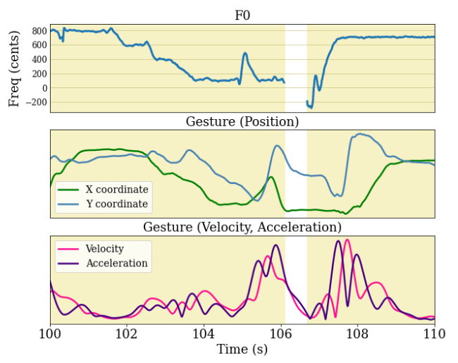

Audio-Gesture Correspondence in Hindustani Raga Alap Singing

Publication:
S. Nadkarni, S. Roychowdhury, P. Rao, M. Clayton, "Exploring the Correspondence of Melodic Contour with Gesture in Raga Alap Singing", International Society for Music Information Retrieval, 2023, Milan, Italy.*
*Nominated for the Best Paper Award
This work is being done as a part of my Dual Degree Masters Thesis at Digital Audio Processing Lab, IIT Bombay, under the supervision of Prof. Preeti Rao. We are working towards a journal paper submission for TISMIR 2024 (Transactions of International Society for Music Information Retrieval), the submission being in June 2024. That submission is aimed at being an extended detailed version of our 2023 conference paper.
Python libraries used: Dtaidistance, Parselmouth, Scikit-Learn, Pandas, Numpy
Other Software used: Audacity
This project explored correspondence between manual gesture and melodic contour in Hindustani classical music performances. We constructed a dataset of audiovisual recordings of Hindustani vocal music comprising 9 ragas (a raga is a melodic framework in classical music) sung by 11 expert performers. From these audiovisual recordings we extracted time series for the pitch contour (audio) using Parselmouth and wrist keypoints (gesture) using OpenPose keypoint estimation. With the automatic segmentation of the audiovisual time series based on analyses of the extracted pitch contour, we study whether melodic similarity implies gesture similarity.
We develop two experiments in our work:
- Stable Note Classification (Bottom-Up Task): We segment the pitch contours into stable and non-stable notes and check whether we can use the corresponding gesture contours to predict whether a note is stable or not. Our results indicate significantly high performance (highest being 89% for one of the singers).
- Raga Phrase Detection using DTW (Top-Down Task): We use Dynamic Time Warping (DTW) based subsequence-search on the audio pitch contour to find raga-characteristic phrases in three of the ragas. Then we check whether the corresponding gesture segments can be used to predict whether a given phrase is Like or Unlike the characteristic phrases. Results indicate performance significantly better than chance.
Our results indicate that specific representations of gesture kinematics can predict high-level melodic features such as held notes and raga-characteristic motifs significantly better than chance.
To know more, please check out our paper.